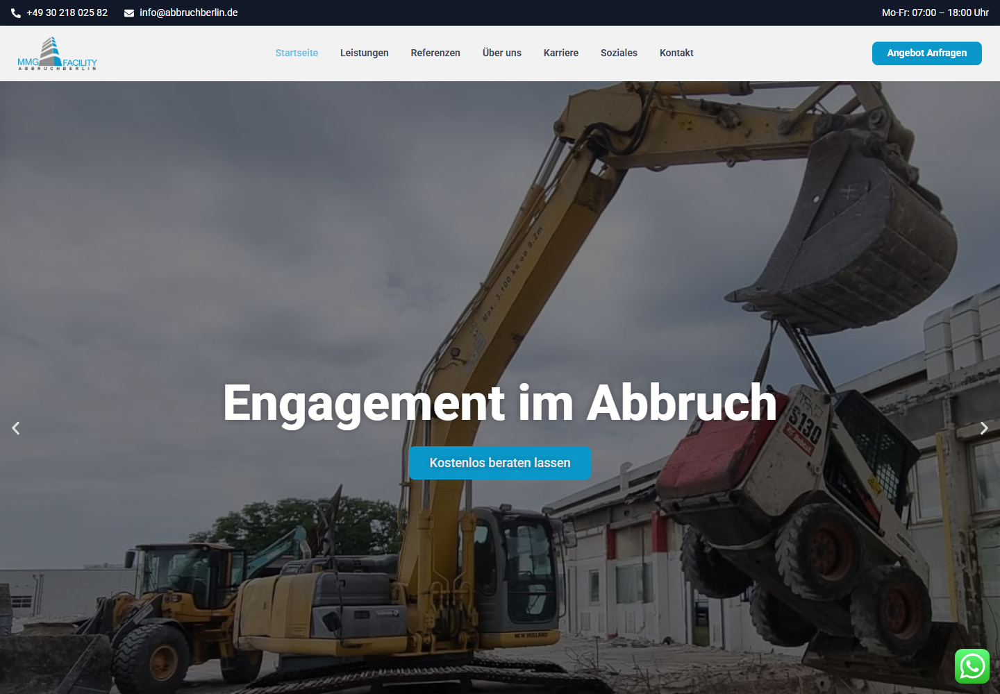

Idee & Gestaltung
Die Idee, Konzeption und das Webdesign von abbruchberlin.de stammen von mir. Ziel war es, die Leistungen des Unternehmens verständlich zu präsentieren und Interessierten aus Berlin und Umgebung einen direkten Weg zur Kontaktaufnahme zu bieten.
Ich erstelle und pflege die Website mit WordPress und Elementor. Dazu gehören auch die Gestaltung und Veröffentlichung von Texten, Bildern und Grafiken.
Mein Beitrag zur SEO
- Keyword-Recherche mit Fokus auf lokale Suchanfragen.
- Optimierung der Inhalte und Seitenstruktur für relevante Leistungen.
- Strukturierung von Überschriften und Erstellung von Meta-Beschreibungen.
- Laufende Website-Pflege und Auswertung mit Google Search Console und Google Analytics.
Ergebnis
Mit unserer Arbeit konnten wir abbruchberlin.de bei lokalen Google-Suchanfragen unter den Top 5 platzieren. Die verbesserte Sichtbarkeit macht die Website für Menschen auffindbar, die nach Abbruchleistungen in der Region suchen.